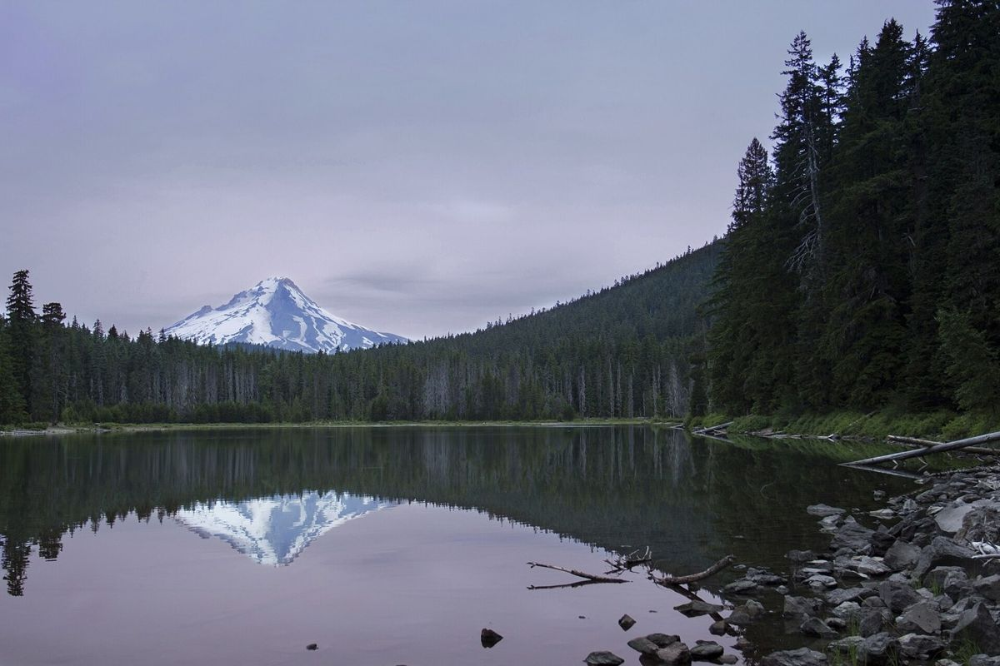
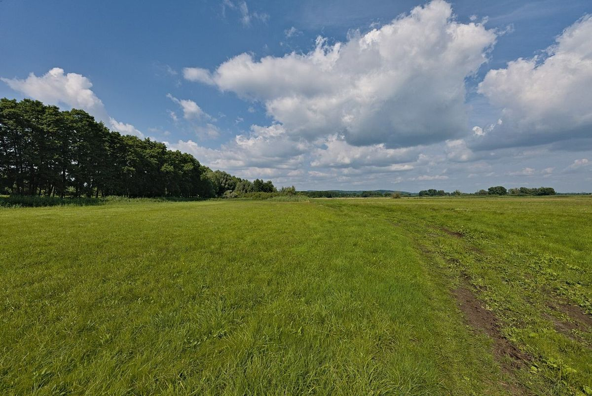
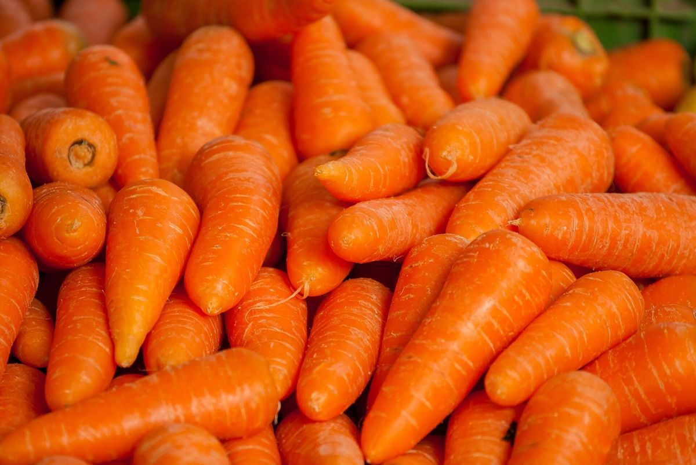
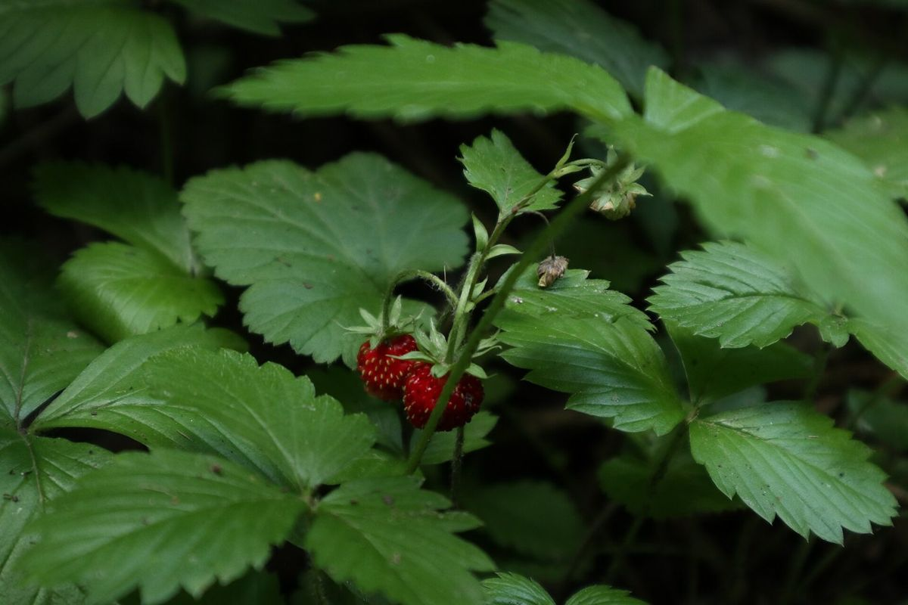
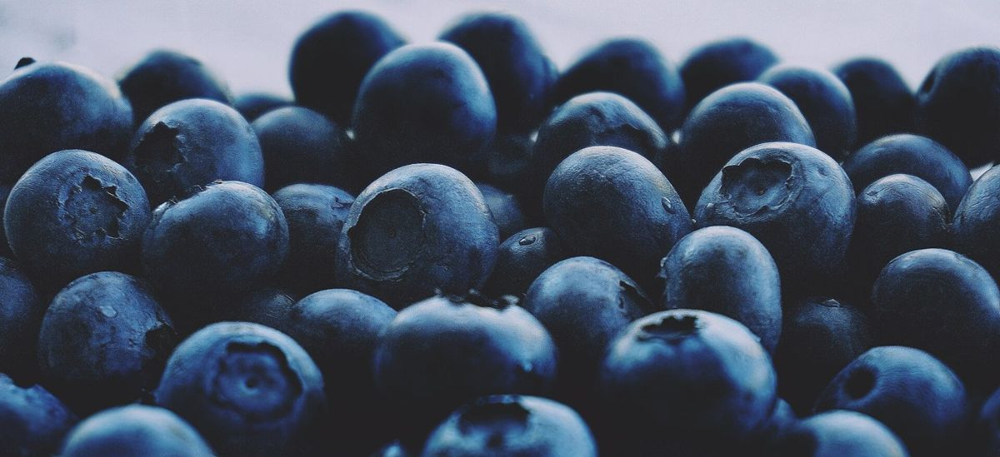
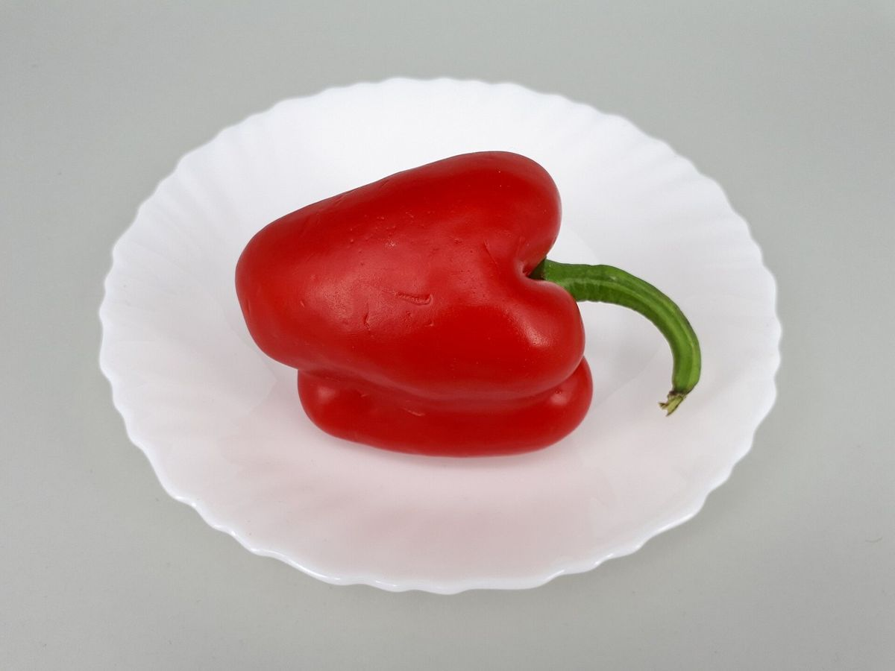

カフェ / 香川県丸亀市
La Taupe
カフェ・ラ・トープ
カフェ「カフェ・ラ・トープ」のご案内ページです。営業時間やメニューなど、詳しいことは準備中。まずはInstagramをのぞいてみてください。
図: 結束バンドの部位の配置図


制作側の連想
結束バンドの部位を、配置図にしてみる
このサイトは、束ねるために使う結束バンドを一本の図にしたつもりで作りました。六つの部位に番号をふり、上の図と並べています。制作側の連想で、お店の理念・由来とは無関係です。実際の製品の仕様を示すものでもありません。
凡例
六つの部位
- 1ヘッドバンドの片端にある、四角い箱の部分。
- 2通し穴先端を差し込むための、ヘッドに開いた穴。
- 3ロック爪穴の内側にある、小さな爪。一方向にだけ進ませる。
- 4ストラップヘッドからのびる、細長い帯の部分。
- 5ギザ帯の片面に並ぶ、細かい歯の列。
- 6テール帯の先端側で、穴に通す余りの部分。
ギャラリー(イメージ)
食材や果実の写真




写真は食材や風景のイメージです。お店のものではなく、お店で提供している商品を示すものでもありません。
ご案内
お店のこと(確認できたものだけ)
| 所在地 | 〒763-0043 香川県丸亀市通町28-3 |
|---|---|
| 電話 | 準備中 |
| 営業時間 | 準備中 |
| 定休日 | 準備中 |
| ご予約 | 準備中 |
| 駐車場 | 準備中 |
| SNS | Instagram @cafe_la_taupe |